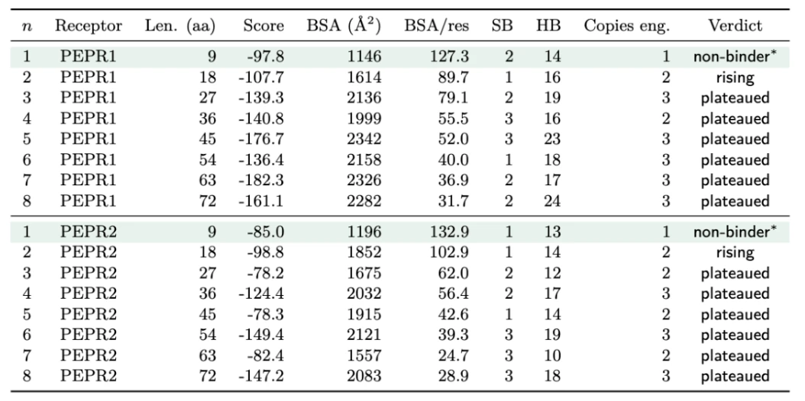

Stress protectant scan
The candidate list was not assembled in one sitting. It moved four times over six months, and each move came from a person outside the team.
| Date | Who moved it | What changed |
|---|---|---|
| 10 March | Team, before advice | Bacteria supply trehalose and ACC deaminase directly, with signal molecules keeping them alive under stress. |
| 3 April | Dr. Verslues | Work with the plant's own drought response using bacterial signals and precursors. Detection before rescue. |
| 27 June | Dr. Sattely | Purified protectant goes on plants alone before anything is integrated. One stress, done well. |
| 9 July | CH Biotech | Computational screening, protective motifs and truncated peptide constructs enter the list beside the two originals. |
That last entry is where this section of the wiki begins. It is the moment the protectant question stopped being a question about which compound to buy and became a question about which sequence to design, which is a question a dry lab can work on. The list it produced was three: ACC deaminase, AtLEA14 and BoPep4.
The three cover different stresses and different mechanisms. ACC deaminase cleaves the immediate precursor of ethylene, so it works on the plant's hormonal response to salinity and hypoxia. AtLEA14 is a cytoplasmic stress protein whose protective action is physical, stabilising membranes and keeping partially unfolded proteins apart. BoPep4 is a signalling ligand: it carries no protective chemistry of its own and instead asks the plant's own receptor to mount a response. Only the third is a peptide with a solved receptor complex, and that is why it, and not the other two, went through the pipeline on the rest of these pages.
The scan itself is undocumented. There is a record of what the list became and who changed it, and no record of what was searched, on what criteria, or how many candidates were looked at and dropped before these three. Closing this needs the screening notes from July: the query used, the databases hit, and the shortlist before it was cut to three.
Sequence alignment
Alignment answers a narrow question that the whole rest of the pipeline depends on: which positions in this molecule are the family's, and which are this member's own. A position the family has kept for tens of millions of years is a position the receptor probably reads. A position that varies freely between members is a position a design can spend.
PEP family
BoPep4 was aligned against the Arabidopsis Pep series, AtPep1 to AtPep8, using the sequences carried by their PROPEP precursor genes. The result splits the peptide in two. The N-terminal region varies widely between members. The C-terminal region carries a conserved motif, SSG‑x2‑G‑x2‑N, that every member of the family holds [6]. Structural work on the AtPep1 complex had already shown that this same C-terminal stretch does the receptor recognition [1], so the alignment and the crystal agree on where the business end is, from two independent directions.
That agreement is what let the project treat the conserved block as fixed and the variable N-terminus as the place to make cuts. Everything on Peptide Design about a protected core and two editable ends comes out of this alignment.
The outline asks the alignment to answer why BoPep4 over AtPep1
, and the alignment on its own cannot. Both peptides carry the conserved motif and both are read by PEPR1. The written reasons that exist are about source organism and about the evidence base, not about the alignment. The BLAST output that this paragraph describes has not been exported to a figure, and the section needs it: the aligned block, with the conserved positions marked and BoPep4's own substitutions called out.
LEA family
The LEA families divide on a structural question, and the project's interest in them turns on it. A classical late embryogenesis abundant protein is an intrinsically disordered chain: highly hydrophilic, no fixed three-dimensional structure in water, protective because it can wrap around whatever is unfolding next to it. AtLEA14 is the atypical case. It is more hydrophobic than its relatives, it has no classical repeat motif, and under hydrated conditions it holds a defined fold containing a conserved WHy domain [7, 8].
That difference is a modelling difference, which is why it belongs on this page. A disordered protectant has no pose to dock and its mechanism is not receptor-mediated, so it is outside the pipeline these pages describe. A folded one could be docked in principle. AtLEA14 sits on the folded side, which is the reason it was ever a candidate for structural work at all.
The protectant write-up describes the AtLEA14 fold two incompatible ways in the same document. One passage has it consist of distinct beta-strands and a conserved WHy domain
, citing Mertens 2018, and carries a figure captioned Beta-strands of AtLEA14
. A later passage has it adopt a compact globular structure composed of seven alpha-helices surrounding a hydrophobic core
, citing the same Singh 2005 solution structure, and the structural-features list repeats the seven helices. Both cannot be the solved fold.
- Beta-strand fold: Protectants write-up, AtLEA14 introduction and Figure 2 (Ethan C, Sophia Y).
- Seven-helix fold: the same write-up, Past Experimentation and Structural Features.
Whoever owns AtLEA14 should read Singh 2005 and state which it is, because every LEA14 engineering axis, including the K-segment work, assumes one of the two. This page states only what both versions agree on, which is that the protein is folded and not an extended disordered chain.
No LEA alignment has been run. The PEP section on this page rests on an alignment across eight paralogues; the LEA section rests on published descriptions of single proteins. An equivalent alignment across the Arabidopsis LEA group AtLEA14 belongs to, one of the groups in the genome-wide classification [9], would say whether its atypical features are unique or shared, which is the question that decides whether any of the peptide methodology transfers.
Evolutionary framing
PROPEP tree
While the protectant list was still open, the team came across the BoPROPEP family tree, and it is what put BoPep4, AtPep1 and AtPep3 on the same page. Treating those three as members of one gene family is the whole move. In Arabidopsis the PROPEP family is eight paralogous genes, AtPROPEP1 to AtPROPEP8, which arose by duplication and encode small secreted elicitor peptides [4]. Extending the tree across species, including Brassica, put BoPep4 in a defined relation to the Arabidopsis peptides instead of leaving it as an isolated sequence from a different plant.
Shared ancestry is a weak signal on its own. It becomes a useful one here because the family shares a receptor: the Pep peptides are perceived by the same pair of receptor kinases, PEPR1 and PEPR2, and that perception is what drives the immune response [3]. A conserved recognition mechanism is a reasonable first filter on which candidates will behave alike, and it narrowed the list before a single experiment ran.
AtPep3 variants
The same tree flagged where the family's function diverges, which turned out to matter more than where it agrees. AtPep3 sits inside the family and uses the same PEPR1 recognition as its relatives, but the functional work on it is specific: a C-terminal fragment of AtPep3 suppressed salt-induced chlorophyll bleaching in seedlings, and that salinity effect is reported for variant 3 and not for the family at large [5].
So the tree carried two things at once. Receptor recognition is conserved, which means a model built on one member is worth something for another. The stress the peptide is useful against is not conserved, which means the choice of member is a real choice. BoPep4's position relative to AtPep3 is the argument for expecting a salinity-relevant response from it, and it is an argument by proximity, not a measurement.
The tree is described here and not shown. The outline calls for the high-resolution PROPEP tree figure and for the BLAST output behind it, and neither is in the source folder. Two specific things are needed: the tree with branch support values and the species sampling stated, and the pairwise identity between BoPep4 and AtPep3 over the conserved block, which is the number the proximity argument actually rests on.
Literature behind the method
Three papers set the method, and it is worth being explicit about which decision each one made, because the section inherits their limits along with their results.
Tang and the binding groove
Tang et al. solved the PEPR1 ectodomain with AtPep1 bound, PDB 5GR8 [1]. It supplies three things this section could not have produced for itself: the peptide binds in an extended conformation along the inner face of the superhelical leucine-rich-repeat solenoid, the C-terminal asparagine carboxylate is clamped by an arginine in a bidentate salt bridge, and the register of the whole chain along the groove is fixed. Everything the Restraints page does with conformers and with receptor residues begins from that structure.
Yu and peptide design strategy
The outline names Yu as the review that summarised plant-derived peptide design strategies and shaped how this project approached the problem. No citation, file or note identifies which paper that is, so it is not cited here and nothing on this page rests on it. This one is cheap to close: whoever read it should paste the DOI.
Pearce and the assay
Pearce et al. ran a structure to activity study on AtPep1, measuring half-maximal activity for an alanine scan and for a truncation series [2]. Two separate things came from it. It is the origin of the project's own testing design, because it defines what a dose-response readout on this peptide family looks like and what counts as a dead control. And it is the only external dataset in reach with measured activity attached to individual sequences, which makes it the one benchmark capable of telling our scoring function it is wrong. It did, and Triage is where that is dealt with.
Two of the six cassettes that eventually shipped are Pearce controls, chosen because their effect sizes are published and span four orders of magnitude. That decision is on Packaging.
Interviews
The protectant list moved on outside advice more than on internal analysis, and the table in section 1 is the record of that. Dr. Verslues turned the design from supplying a compound toward priming the plant's own response, which is the reason a signalling peptide was a candidate at all. Dr. Sattely insisted that a purified protectant go onto plants by itself before it went anywhere near a bioreactor, which set the order of work for the whole year. The full record of both conversations, and of what changed because of them, is on Integrated Human Practices.
The outline lists an ACC deaminase interview with Dr. Brophy under this heading, and the human practices record does not support it. The 18 April meeting with Dr. Brophy is documented at length, and it is about kill switches, physical containment and which signal route to build on. Nothing in the meeting notes or the evolution map has her advising on ACC deaminase. Either a second conversation exists and was never written up, in which case the notes should go into the human practices record first, or the outline entry is a mistake and should come off. Whoever attended should say which.
Protectants not carried
Trehalose was in the first design, on 10 March, and it did not survive the year. It also has a second life in this project as a proposed positive control for the plant assays, and that use has its own problem: six experiment sets were run with it and none produced a reliable rescue, so it cannot be quoted as a validated control. The Plants page carries that record.
The outline lists trehalose, proline and CAP as considered and dropped, and asks for the reasons. Only the trehalose chronology is recorded anywhere, and even that is a record of it disappearing rather than of a decision to drop it. Proline and CAP have no written trace at all: no note of why they were raised, what was read about them, or what ruled them out. Retiring an idea on evidence is worth as much as keeping one, so this section is worth writing properly. It needs three short paragraphs and, for each, the one piece of evidence that ended it.
Engineering axes
With the conserved block identified and the variable region mapped, the design question narrows to what kind of change to make. Three axes were put forward. Each one is a different bet about what limits the molecule, and each was tested by building the variants and docking them, which is the work on the Assembly and Triage pages.
Truncations
The bet here is about manufacturing. A shorter chain is fewer residues to synthesise, fewer to push through a secretion pore, and less surface for a protease to work on. If the N-terminal region contributes nothing to receptor contact, removing it is free, and the constructs get cheaper and should leave the cell faster.
The alignment already said the N-terminus is the variable part. The docking ladder was run to find how far the cut can go before the peptide stops binding, and that ladder is reported on Peptide Design, where the two methods that answered it disagree by five residues and the answer is given as a range. The secretion half of the bet is not settled by anything computational. The wet lab has taken it on as a testable claim and is measuring secretion of the truncated constructs against the full-length one, because a protectant that binds well and leaves the cell slowly does not help a bioreactor.
The truncation write-up reads a plateau and a cliff off HADDOCK water-refined scores and states that wild type and Δ1–6 sit within 20 units of each other
, taking that as evidence the first six residues can be removed without an affinity cost.
- Score plateau as evidence: Protein Design Writing.docx, Engineering Axes → Truncations, with the ladder chart.
- Against it: re-running the same complex at a different random seed moves this pipeline's score by 13 to 36 units, recorded in the 30 July pipeline audit and on Peptide Design. A 20-unit gap is inside that spread.
The conclusion may well be right, because three other lines support it: the alignment, the crystal density, in which residues 1 to 6 are unresolved, and the AlphaFold3 confidence profile. The score argument is the one that has to go, and the paragraph should be rewritten on the other three.
Point substitutions
The bet here is about single positions. If a residue on BoPep4 differs from the equivalent residue on AtPep1, and AtPep1 is the peptide with the solved complex, then restoring the AtPep1 identity might restore a contact the crystal shows and our peptide lacks. The same logic applied to secretion, where the target was a position whose charge might expose the chain to proteases in the B. subtilis supernatant.
The axis was retired. The two substitutions it produced were withdrawn, one of them off a DNA order on the morning it was due to ship, and the reasons are set out with their evidence in the ledger on Peptide Design. The short version is that the positions chosen turned out to be the wrong positions: one of them makes no receptor contact at all, and the other already makes both of the contacts the substitution was meant to add. This page keeps the axis because the reasoning behind it was sound and the same reasoning will be worth running again on a better-chosen position.
The current writing still carries the retracted claims as findings.
- As a win: Protein Design Writing.docx, Engineering Axes → Point Substitutions, which states
we proved this via HADDOCK
, keeps K18R as an affinity lead and K8Q as a receptor-neutral secretion handle, and uses the alanine scan to call one position essential. - As retracted: the 30 July pipeline audit and the 16 August structural review, recorded in the ledger on Peptide Design. K18R was withdrawn twice, the second time after its contacts were measured against the crystal.
The source document needs the correction written into it, because the wiki has moved and the document has not, and the next person to read it will reintroduce the claim.
Conserved repeats
The third bet is about valency. If the conserved C-terminal block is what the receptor reads, then a construct carrying that block several times over might make more contacts, or bridge two receptor molecules, and a tandem sweep was run to find out.
The sweep is the clearest case on this page of a measurement that answers a design question without going near a score. Buried surface area per residue falls monotonically with every copy added, from about 127 Å2 at one copy to about 32 at eight, and the number of copies actually touching the receptor saturates at three however many are supplied. The extra copies are along for the ride. That is a geometric result, it is read off contact areas, and it does not depend on the docking score being meaningful.

The axis was retired on that result, and one idea inside it was kept in a different frame. The sweep asked whether repetition rescues binding, and the answer is no. It never asked whether repetition raises yield, and a cleavable-linker polypeptide that releases several copies per translation event is a real proposal. It needs a protease with clean specificity in B. subtilis, so it sits in future work.
References
- Tang, J., Han, Z., Sun, Y., Zhang, H., Gong, X. & Chai, J. Structural basis for recognition of an endogenous peptide by the plant receptor kinase PEPR1. Cell Research 25, 110–120 (2015). PDB 5GR8.
- Pearce, G., Yamaguchi, Y., Munske, G. & Ryan, C. A. Structure–activity studies of AtPep1, a plant peptide signal involved in the innate immune response. Peptides 29, 2083–2089 (2008).
- Yamaguchi, Y., Huffaker, A., Bryan, A. C., Tax, F. E. & Ryan, C. A. PEPR2 is a second receptor for the Pep1 and Pep2 peptides and contributes to defense responses in Arabidopsis. Plant Cell 22, 508–522 (2010).
- Huffaker, A., Pearce, G. & Ryan, C. A. An endogenous peptide signal in Arabidopsis activates components of the innate immune response. PNAS 103, 10098–10103 (2006).
- Nakaminami, K. et al. AtPep3 is a hormone-like peptide that plays a role in the salinity stress tolerance of plants. PNAS 115, 5810–5815 (2018).
- Wang and colleagues, on the conserved C-terminal Pep motif, cited as
Wang et al., 2022
in “Protein Design & Docking Methodology.docx”. exact source needed - Singh, S. et al. Solution structure of a late embryogenesis abundant protein (LEA14) from Arabidopsis thaliana, a cellular stress-related protein. Protein Science 14, 2601–2609 (2005).
- Mertens, J., Aliyu, H. & Cowan, D. A. LEA proteins and the evolution of the WHy domain. Applied and Environmental Microbiology 84, e00539-18 (2018).
- Hundertmark, M. & Hincha, D. K. LEA (late embryogenesis abundant) proteins and their encoding genes in Arabidopsis thaliana. BMC Genomics 9, 118 (2008).